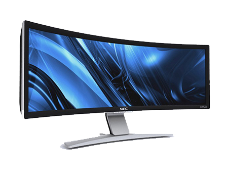
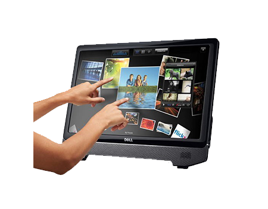
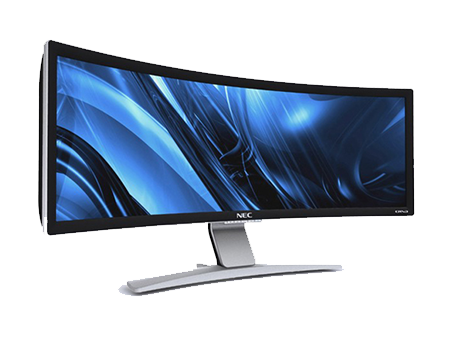
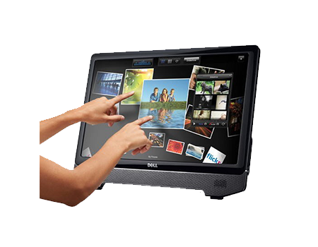

Un periférico de salida es un dispositivo electrónico capaz de imprimir, mostrar o emitir señales que sean fácilmente interpretables por el usuario. Básicamente, un periférico de salida tiene la función de mostrarle al usuario operador de la computadora el resultado de las operaciones realizadas o procesadas por la misma.
Es decir que mediante la utilización del periférico de salida la computadora se comunica y nos muestra el resultado de nuestro trabajo, pudiendo observarlos fácilmente por intermedio del monitor o la impresora, los dos periféricos de salida más utilizados. También existe un tercer tipo de periférico de salida, comúnmente conocido como parlantes o auriculares, los cuales nos permitirán escuchar lo que la computadora tiene para decir.
Como mencionamos, los periféricos de salida más comunes son el monitor y la impresora, y debajo de estas líneas podremos conocer un poco más de cerca algunas de sus características técnicas más relevantes.
Monitor
El monitor de nuestra PC es sin duda el dispositivo de salida más importante del conjunto, ya que sin él no podríamos saber qué es lo que está pasando en la computadora.
Este dispositivo de visualización está constituido por diversos puntos luminosos denominados píxeles, siendo la cantidad de píxeles lo que determina la resolución gráfica del mismo; cuanto mayor que sea la cantidad de píxeles, mayor es la resolución, pues la misma imagen es reproducida en un número mayor de puntos mejorando la visualización de los detalles.
Existen dos tipos principales de monitor, el denominado CRT o tubo de rayos catódicos y los nuevos monitores de panel planos, de los cuales podemos encontrar en el mercado dos variantes, de LED o LCD.
Los monitores CRT son el tipo más antiguo de visualizador, prácticamente en desuso en la actualidad, en el mercado ya no se consiguen nuevos, esto es debido a que han sido reemplazados por los monitores de LCD o LED, los cuales otorgan una larga serie de ventajas con respecto a éste.

Los monitores LED o también los monitores con tecnología LCD utilizan métodos muy diferentes a las usadas con los monitores CRT, y ofrecen muchas ventajas con respecto al modo en que se presentan los datos en la pantalla, generalmente más grande y en formato de pantalla ancha.

Impresora
La impresora es otro de los periféricos de salida más importantes, ya que fueron diseñadas para poder perpetuar en papel los resultados o datos procesados por la computadora.
Al contrario que en el caso del monitor, la impresora no es un dispositivo imprescindible, pero es de especial importancia cuando necesitamos representar la información procesada por la PC en papel en forma de listados, gráficos, dibujos, imágenes y demás.

En la actualidad existen varios tipos de impresoras, siendo las más utilizadas en el momento las de láser y las impresoras multifunción, una clase especial de dispositivo que reúne scanner, fotocopiadora e impresora en un mismo aparato.

Cabe destacar que también podemos encontrar otros tipos de impresoras, las cuales son utilizadas en ámbitos más especializados. Entre ellas podemos mencionar las impresoras láser color, plotters e impresoras para gigantografías, todas ellas usadas en el ámbito gráfico y las impresoras de matriz de puntos, si bien una tecnología bastante antigua, aún muy utilizadas por comercios.
Parlantes
Los parlantes o auricularesson los encargados de reproducir los sonidos que emite la computadoraa través de la placa de audio de la misma.

Junto a los auriculares son el dispositivo más utilizado para escuchar música a través del reproductor de audio de nuestro sistema operativo.
En la actualidad podemos encontrar parlantes tanto estéreo, es decir 2 canales, izquierdo y derecho, así como multicanal, conformado por hasta 7 canales de audio distintos.